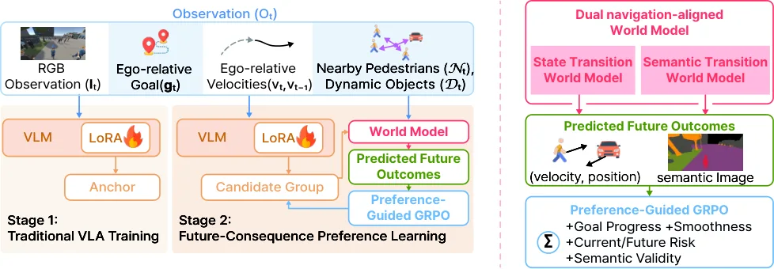

新论文 · 日期 2026-11-06 · score 11 · S层 · Geometry Foundation Models / 3D Foundation Models · cs.RO
内容级别：完整单篇海报
作者：Weiduo Yuan, Ze Yuan, Sihan Liu, Jionghao Wang, Liang Heng, Zhenyu Zhao, Yue Wang
评分 8/10
世界动作模型度量深度UMI 示范跨本体迁移双夹爪 RGB-D 画布Wan2.2 视频主干操作基准
一句话工作总结：把深度当成“要预测的世界状态”而不是“额外输入”：每只夹爪三目相机取中/右两目做极线校正 + Fast FoundationStereo 得视差，按标定转成度量 Z 深度，再映射回原始鱼眼坐标；深度用固定上下界（0.01–1.5 m）+ Turbo 色映射编码成三通道图，与 RGB 拼成 2×2 的双夹爪画布（每格 160×160，共 320×320），整体交给同一个 Wan…
通用操作接口 UMI 让示范采集脱离具体机器人，但腕部鱼眼相机随夹爪移动、没有稳定外视角，导致精确操作所需的度量几何被压在 RGB 表观里。本文提出 5B 的空间世界动作模型 Spatial-UMI-Dream：在 605 小时 RGB-D UMI 数据上先做 world-only 适配、再做 world-action 联合训练，联合预测未来 RGB、与鱼眼对齐的度量深度和动作；双目恢复的深度让场景尺度与空间关系显…
The Universal Manipulation Interface (UMI) enables scalable demonstration collection independently of a specific robot. However, its moving, close-range gripper cameras entangle camera and object motion withou…

新论文 · 日期 2026-11-06 · score 13 · A层 · Robotic Foundation Models / VLA · cs.GR, cs.AI, cs.CV, cs.RO
内容级别：半海报
作者：Seong-Eun Hong, JuYeong Hwang, Jinhyun Kim, Hanyoung Jang, HyeongYeop Kang
评分 8/10
人群导航世界模型GRPO 偏好蒸馏离散动作锚点语义分割预测单次前向部署
一句话工作总结：先验：Qwen3-VL-2B-Instruct + LoRA 在 100 条 k-means 运动锚点上做分类（20 帧片段、25 FPS、40 维位移），得人类化动作流形。精化：冻结的两个世界模型分别预测“谁往哪走”（相对位移+速度+方向余弦项，位置 ADE 0.18 m、朝向误差 20.8°）与“场景能让出什么”（EDM 去噪预测导航语义分割，行人像素置 ignore，m…
在人群场景里选下一步，不只是避开眼前的东西：一个动作局部可行，却可能把智能体带离人行横道、切入正在过街的人流、或堵住狭窄通道。这类失败在当前状态下不可见，只有推理“这个动作会导致什么”才能发现。世界模型正是做这件事的，但每一步都 rollout 的开销部署系统付不起，领域因此长期在“前瞻”与“速度”之间二选一。作者认为这是假两难：世界模型更自然的位置是训练期，作为偏好预言机把前瞻蒸馏进快速策略，而不是推理期的在线规…
Selecting a next motion in a populated scene is not just a matter of avoiding what is currently in the way: an action can be locally feasible yet drift onto the road instead of the crosswalk, cut into a stream…
新论文 · 日期 2026-11-06 · score 9 · B层 · Neural Rendering / 3DGS / NeRF · cs.GR
内容级别：简报式摘要
作者：Yuting Wang, Yang Zhao, Shanding Diao, Penglin Wang, Yuan Chen, Wei Jia, Ronggang Wang
评分 5/10
3D 高斯泼溅网格绑定容量分配几何编辑混合表示
一句话工作总结：B 级观察。核心判断是“容量应按外观需求分配，而不是按几何细分密度”，因此把高斯优化与网格解耦：先自由优化高斯，再事后绑定到面；编辑时把网格的局部仿射形变传给高斯中心与协方差。对做地图表示的人，这条“表示容量与几何拓扑解耦”的思路可以迁移到点云/网格混合地图：几何层负责可编辑、可查询的拓扑，外观层按信息量自适应加密。需要注意的是，摘要只给“更少高斯 + 更好平均质量”的定性结…
3DGS 能实现照片级新视角合成，但缺少显式拓扑，不便做几何编辑。现有基于网格的方法通过把高斯绑定到三角面来实现几何操作，通常给每个面固定数量的高斯；然而外观重建所需的表示容量取决于局部外观复杂度，而不只是网格细分密度。作者提出 P-MGS：把外观建模与几何控制分离，引入感知复杂度引导的分配策略，按多视观测估计的表面外观需求分配高斯；高斯在优化时不受网格约束，之后通过事后绑定与原始网格关联，从而在保持网格拓扑的同时…
3D Gaussian Splatting (3DGS) enables photorealistic novel-view synthesis but lacks explicit topology for geometric editing. Existing mesh-based methods enable geometric manipulation by associating Gaussians wi…
新论文 · 日期 2026-11-06 · score 7 · B层 · Neural Rendering / 3DGS / NeRF · cs.CV, cs.GR
内容级别：简报式摘要
作者：Zhihao Tang, Youjia Zhang, Mingbo Zhao, Wei Yang
评分 5/10
网格泼溅Delaunay 三角化拓扑演化纹理残差网格压缩
一句话工作总结：B 级观察。三个模块各管一件事：Safe RDT 保证初始三角化的几何安全（不产生退化面），DTE 让三角形数量随场景自适应增减，纹理残差把高频外观从几何里剥离出去，因此不需要靠疯狂细分来拟合细节。Mip-NeRF 360 上 +0.71 dB over MeshSplatting，面数可降到 10% 仍在可接受范围。对建图的价值在于“几何简化 + 纹理补偿”这一分离：几何层…
基于三角形的泼溅把新视角合成接回传统图形管线，但为保留外观细节往往需要过度细分。作者提出 T²-Splat，把拓扑自适应与外观精化解耦：用安全受限 Delaunay 三角化（Safe RDT）初始化网格连通性，再用动态拓扑演化（DTE）通过边折叠与顶点分裂调整三角形分配，最后由逐面 Mip 纹理残差在固定网格上用尺度自适应滤波精化外观。在 Mip-NeRF 360、Tanks & Temples、DTU 上以紧凑网…
Triangle-based splatting connects novel view synthesis with conventional graphics pipelines, but often requires excessive tessellation to preserve appearance details. We present T$^2$-Splat, which decouples to…
新论文 · 日期 2026-11-06 · score 6 · B层 · Neural Rendering / 3DGS / NeRF · cs.CV
内容级别：简报式摘要
作者：Kaixuan Zhang, Zhipeng Xiong, Minxian Li, Mingwu Ren, Xiatian Zhu
评分 6/10
广视场合成前馈高斯泼溅多相机环视分片透视渲染跨相机光度自动驾驶
一句话工作总结：B 级观察。做法是前馈（免逐场景优化）的高斯泼溅：把多相机特征直接解码成高斯，再用“分片透视渲染”把宽视场拆成若干共享光心的局部透视投影，避免单一大视场投影的边缘拉伸；训练时用 SAPM 显式建模跨相机的光度差异，减少拼接接缝。数据侧自建 WideDrive 合成基准提供稠密真值，并把 LiDAR 投影的稀疏参考协议搬到真实驾驶数据集上做评测。对做环视/多相机几何的人，可借鉴…
多透视相机系统在自动驾驶中被广泛采用，以提供宽阔的视觉覆盖，由此产生“从空间分离的观测合成统一广视场”的需求。本文形式化广视场合成（WVS）：在指定虚拟视点合成几何一致的宽视角图像。与图像拼接不同，WVS 需要推理三维几何与可见性，以处理空间分离相机中心带来的深度相关视差与遮挡。原始 3DGS 依赖逐场景优化，难以用于驾驶场景；WVS 还带来透视投影下的边缘拉伸与跨相机光度不一致。作者提出 Wide-View Ga…
Multi-perspective-camera systems are widely adopted since they provide broad visual coverage for autonomous driving, motivating the synthesis of a unified wide view from spatially separated observations. In th…